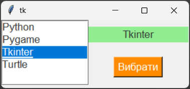
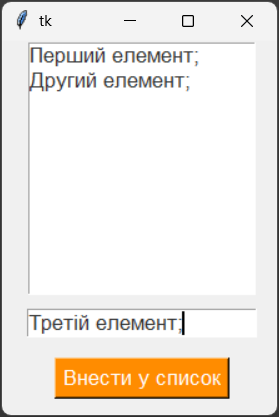
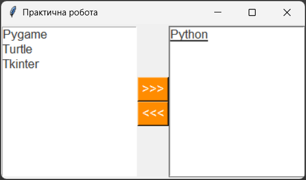

Віджет Listbox – клас списку. Цей віджет дозволяє користувачеві вибирати один або кілька елементів зі списку.
Загальний синтаксис:
name = Listbox(window, options)
де, name – ім'я списку, window – ім'я вікна, на якому розташовується список, options – параметри списку.
Властивості Listbox:
| Властивість | Значення |
|---|---|
| width | Ширина списку в пікселях. |
| height | Висота списку в кількості рядків, які можуть бути відображені одночасно. |
| background (bg) | Колір фону списку. |
| foreground (fg) | Колір тексту на списку. |
| borderwidth (bd) | Ширина рамки навколо списку в пікселях. |
| state | Стан списку. Може мати значення: "normal" або "disabled". |
| justify | Вирівнювання тексту на списку. Може мати значення: "left", "right", "center". |
| relief | Стиль рамки навколо списку. Може мати значення: "flat", "raised", "sunken", "groove", "ridge". |
| text | Текст, який відображається на списку. |
| font | Шрифт тексту на списку. Може бути заданий у вигляді рядка, наприклад: "Arial 12", або у вигляді кортежу, наприклад: ("Arial", 12). |
| selectmode | Режим вибору елементів у списку. Може мати значення: "single", "browse", "multiple". |
| disabledforeground | Колір тексту на списку, коли він знаходиться в стані "disabled". |
| highlightthickness | Товщина рамки навколо списку при його виділенні. |
| selectbackground | Колір фону вибраних елементів у списку. |
| selectforeground | Колір тексту вибраних елементів у списку. |
| exportselection | Визначає, чи буде вибір елементів у списку експортуватися в буфер обміну. Може мати значення: True або False. |
| listvariable | Властивість listvariable дозволяє зв'язати список з певною змінною Tkinter, такою як StringVar. Це дозволяє отримувати поточний список елементів та використовувати його в програмі. |
| yscrollcommand | Властивість yscrollcommand дозволяє зв'язати вертикальну шкалу прокрутки з віджетом Listbox. Це дозволяє користувачеві прокручувати список, якщо він містить більше елементів, ніж може відобразитися в доступному просторі. |
| xscrollcommand | Властивість xscrollcommand дозволяє зв'язати горизонтальну шкалу прокрутки з віджетом Listbox. Це дозволяє користувачеві прокручувати список в горизонтальному напрямку, якщо він містить елементи, які не поміщаються в доступному просторі. |
Важливо пам'ятати, що при використанні властивості listvariable для зв'язування списку з певною змінною Tkinter, необхідно створити цю змінну перед створенням списку. Зазвичай використовується тип змінної StringVar, який дозволяє зберігати рядкові значення.
Функції Listbox:
Функції Listbox дозволяють виконувати різні операції з списком, такі як отримання вибраних елементів, встановлення вибору та інші.
| Функція | Значення |
|---|---|
| get(початок, кінець) | Повертає список елементів з вказаного діапазону. |
| set() | Встановлює список елементів у віджеті Listbox. |
| curselection() | Повертає індекси вибраних елементів у списку. |
| delete(початок, кінець) | Видаляє елементи з вказаного діапазону. |
| insert(індекс, елемент) | Вставляє елемент у список на вказаний індекс. |
| selection_set(початок, кінець) | Встановлює вибір для елементів у вказаному діапазоні. |
Ці функції дозволяють вам отримувати та змінювати вміст списку, а також керувати вибором елементів у списку. Наприклад, ви можете використовувати функцію get() для отримання поточного списку елементів, функцію insert() для додавання нових елементів до списку, або функцію delete() для видалення елементів зі списку.
Спочатку список Listbox порожній. За допомогою циклу for в нього додаються пункти зі списку. Додавання відбувається за допомогою спеціального методу класу Listbox – insert. Даний метод приймає два параметри: куди додати і що додати. Перший параметр може мати значення: END (дodати в кінець списку), 0 (дodати на початок списку) або індекс, за яким буде дodано елемент. Другий параметр – це текст, який буде відображатися у списку. У нашому випадку це елемент зі списку fruits.
Алгоритм:
lb = Listbox(root, height=5, width=15, selectmode=EXTENDED)
list = ["Python", "Pygame", "Tkinter", "Turtle"]
for i in list1:
listbox1.insert(END, i)
1. Розмістимо у вікні список з можливістю вибору одного елемента та кнопку, яка при натисканні додає вибране із списку значення у мітку.
from tkinter import *
root = Tk()
root.geometry("300x110")
def f():
lab['text']=(list1.get(list1.curselection()))
list1 = Listbox(root, selectmode=SINGLE, width=15, height=5, fg="#333333", font="Arial 13")
list1.grid(row=0,column=0,rowspan=2)
for i in ['Python', 'Pygame', 'Tkinter', 'Turtle']:
list1.insert(END, i)
butt = Button(root, text='Вибрати', font="Arial 13", bg="#ff8c00", fg="white", command=f)
butt.grid(row=1,column=1)
lab=Label(root,width=17,bg='light green', fg="#333333", font="Arial 13")
lab.grid(row=0,column=1)
root.mainloop()

2. Розмістимо у вікні список Listbox, текстове поле Entry та кнопку Button. Кнопка додає введений користувачем рядок у текстовому полі в список Listbox і видаляє його з поля Entry.
from tkinter import *
root = Tk()
root.geometry("220x300")
def fin():
lbox.insert(END, entry.get())
entry.delete(0, END)
frame1 = Frame().grid(row = 0, column = 0)
frame2 = Frame().grid(row = 0, column = 1)
lbox = Listbox(frame1, fg="#333333", font="Arial 13")
lbox.grid()
entry = Entry(frame2, fg="#333333", font="Arial 13")
entry.grid(padx = 20, pady = 10)
button = Button(frame2,text = "Внести у список", font="Arial 13", bg="#ff8c00", fg="white", command = fin)
button.grid(padx = 20, pady = 6)
root.mainloop()

Розмістіть у вікні два списки Listbox. У першому буде перелік товарів, заданий програмно. Другий список спочатку порожній. Після вибору товару у першому списку та натискання на першу кнопку товар переходить із першого списку в другий і навпаки.
Зразок

1. Імпортуйте бібліотеку tkinter.
from tkinter import * 2. Створіть головне вікно програми.
root = Tk() 3. Дайте вікну назву "Практична робота".
root.title("Практична робота") 4. Встановіть розміри вікна.
root.geometry("410x210") 5. Створіть екземпляр класу Listbox - перший список з іменем lbox1, та розмістіть його у вікні ліворуч.
lbox1 = Listbox(root, font="Arial 13", fg="#333333", selectmode=SINGLE)
lbox1.pack(side=LEFT)6. Створіть екземпляр класу Listbox - другий список з іменем lbox2, та розмістіть його у вікні праворуч. Аналогічно до першого списку.
7. Для додавання кнопок ми використайтк рамку, яка дозволить згрупувати інші віджети. Рамка буде розташована між двома списками. У ній будуть розміщені дві кнопки для перенесення товарів між списками.
frame = Frame()
frame.pack(side=LEFT)8. Створіть першу кнопку button1 та розмістіть її у рамці frame, яку створили на попередньому кроці. Текст кнопки – ">>>". Колір фону – #ff8c00, колір тексту – білий. Пізніше ми створимо функцію lbox1_to_lbox2' для цієї кнопки, яка буде переносити товар з першого списку в другий.
button1 = Button(frame, text='>>>', font="Arial 13", bg="#ff8c00", fg="white", command=lbox1_to_lbox2)
button1.pack(side=TOP)9. Аналогічно створіть другу кнопку button2 та розмістіть її у рамці frame. Текст кнопки – "<<<". Колір фону – #ff8c00, колір тексту – білий. Пізніше ми створимо функцію "lbox2_to_lbox1' для цієї кнопки, яка буде переносити товар з другого списку в перший.
10. Наповніть перший список елементами за допомогою циклу.
for i in ['Python', 'Pygame', 'Tkinter', 'Turtle']:
lbox1.insert(END, i)11. Створіть першу функцію з іменем lbox1_to_lbox2, яка буде переміщати вибрані елементи з першого списку в другий. Для цього використайте метод curselection() для отримання індексу вибраного елемента у першому списку, метод get() для отримання тексту вибраного елемента та метод insert() для додавання цього тексту до другого списку. Після цього видаліть вибраний елемент з першого списку за допомогою методу delete().
def lbox2_to_lbox1():
n=lbox2.curselection()
lbox1.insert(END, lbox2.get(n))
lbox2.delete(n)12. Створіть другу функцію з іменем lbox2_to_lbox1, яка буде переміщати вибрані елементи з другого списку в перший. Аналогічно до попередньої функції.
13. Додайте команду для коректного відображення вікна в кінець коду програми – метод mainloop().
root.mainloop()14. Файл з кодом програми збережіть у власну папку з іменем pw_11_01.py.
«Формування команди проєкту». Розробіть програму з графічним інтерфейсом, яка дозволяє розподіляти співробітників за завданнями.
Інтерфейс: Розмістіть два списки Listbox поруч. Між ними додайте дві кнопки зі стрілками: >> та <<.
Наповнення: Лівий список містить прізвища доступних фахівців (задайте 5–7 значень у коді). Правий список спочатку порожній - це «Активна команда».
Логіка кнопок: При виборі прізвища в лівому списку та натисканні >>, воно має копіюватися у правий список, але залишатися в лівому (як доступний ресурс). При виборі елемента в правому списку та натисканні <<, цей елемент має повністю видалятися з правого списку (скасування призначення).
Додаткова умова: Зробіть так, щоб одне і те саме прізвище не могло з'явитися у другому списку двічі (перевірка на дублікати перед додаванням).
Файл з кодом програми збережіть у власну папку з іменем tk_11_01.py.